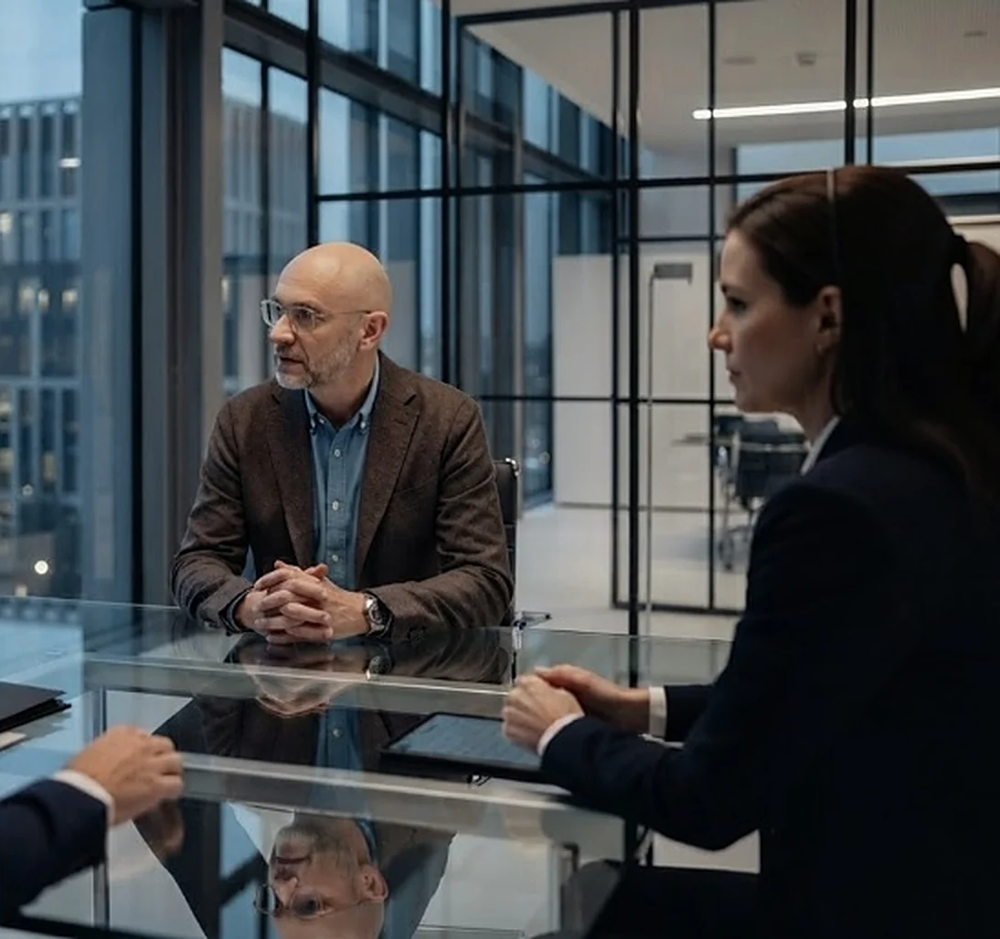

Interne Vorschau
Drei Entwürfe für die neue Website
Entwurf A und B zeigen zwei Wege für die Startseite. Entwurf C ist der aktuelle Stand: alle Seiten mit finalen Texten, verbunden und mit Terminbuchung.

Entwurf A
Klare Seitenstruktur
Eine Sektion pro Bildschirm. Alle Seiten nach dem Copy Deck.
Entwurf A öffnen →
Entwurf B
Die Journey
Ein Faden führt durch die Seite. Der Besucher wählt früh seine Situation.
Entwurf B öffnen →
Entwurf C · aktueller Stand
Die ganze Website
13 Seiten: Startseite, Seminare, Michael, Was ist Rhetorik, Stimmen, FAQ, Gespräch buchen, eine Landingpage je Persona und Impressum, Datenschutz, AGB. Alle Seiten verbunden, Texte nach Freigabe.
Entwurf C öffnen →Entwurf C
Alle Seiten direkt öffnen
Jede Seite ist auch über das Menü und die Karten auf der Startseite erreichbar.
- StartseiteEinstieg und Überblick
- SeminareFormate, Orte, Termine
- MichaelWerdegang und Methode
- Was ist RhetorikRatgeber, kostenloses Training
- StimmenVideo-Stimmen der Teilnehmer
- FAQHäufige Fragen
- Gespräch buchenTerminbuchung
- Landingpage The ReplayersCommunity Talk to ME auf Skool
- Landingpage The OverlookedMethode und Formate, Gespräch
- Landingpage The UndersoldSeminarorte für Führungskräfte, Gespräch
- ImpressumFirma, Geschäftsführer, Kontakt
- DatenschutzDatenschutzerklärung
- AGBAllgemeine Geschäftsbedingungen